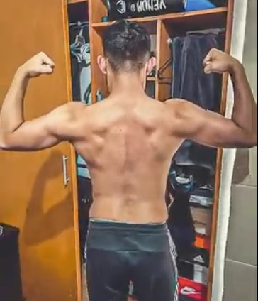
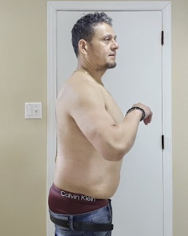
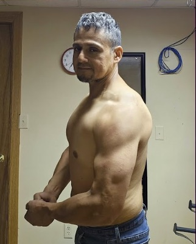
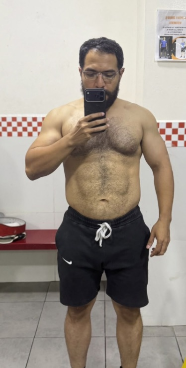
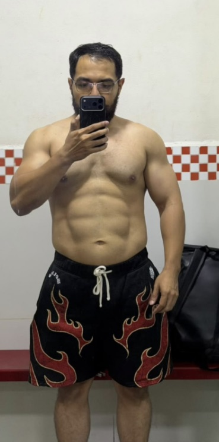
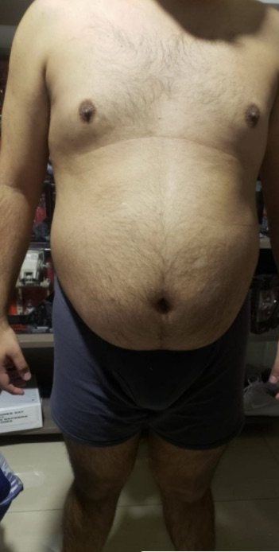
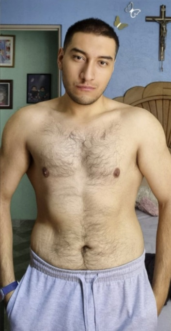
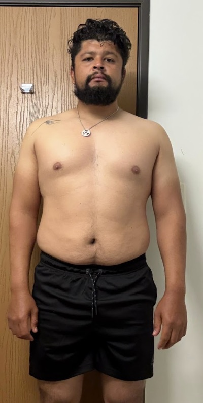
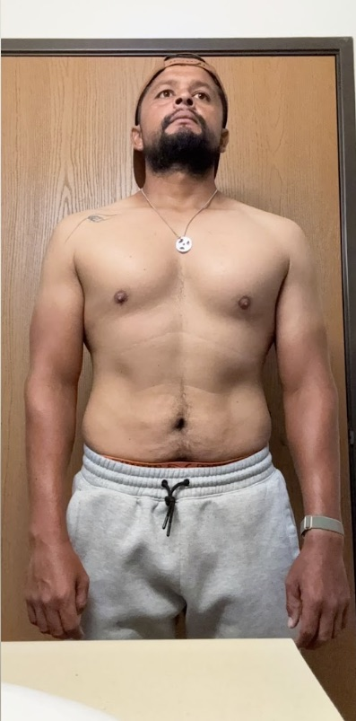

Héctor
Creador de contenido · 30 años
Marcó su abdomen por primera vez · 12 semanas

DespuésNunca en su vida había marcado el abdomen. En sus primeras 12 semanas mejoró sus proporciones: hombros, espalda y abdomen.
*Para profesionistas y dueños de negocio de +27 años con la agenda llena
…y por fin se ven como siempre han querido, sosteniendo una vida saludable. Con solo 3 entrenamientos a la semana y un plan basado en evidencia, en gym o en casa.
Llena el formulario y elige tu horario disponible.
Una videollamada conmigo para conocer tu punto de partida: horarios, alimentación, entrenamiento, sueño, lesiones y qué te motiva.
🔒 Tu información es confidencial. Solo se usa para preparar tu consulta.
Elige el horario que mejor te acomode. Te confirmamos por WhatsApp.
Resultados reales
Pacientes en Latinoamérica, Europa y Asia. Cada uno con un contexto distinto y un protocolo hecho para su vida.
Creador de contenido · 30 años
Marcó su abdomen por primera vez · 12 semanas

DespuésNunca en su vida había marcado el abdomen. En sus primeras 12 semanas mejoró sus proporciones: hombros, espalda y abdomen.
Trabajo en granja (EE. UU.) · 51 años
Recomposición · 12 semanas

Antes
DespuésTrabajo de una demanda física altísima. Entrena de noche, cuando ya llega fatigado: la clave fue gestionar la fatiga.
Marketing · Argentina
Entrenando en casa · 12 semanas
Sin gimnasio, solo con equipo de calistenia. Mejor definición, más fuerza y mejores proporciones.
Ingeniero · 35 años
−6 kg · 8 semanas

Antes
DespuésLlegó con buena base muscular pero estancado. Quiere competir en culturismo: primero mejoramos su entorno metabólico y ahora va por ganar músculo.
Licenciado · 31 años
−20 kg · 6 meses

Antes
DespuésBatalló mucho tiempo con la grasa elevada y la salud deteriorada. Hoy va cómodo al gym y usa ropa que llevaba años sin ponerse.
Papá · 31 años
De 105 kg a 84 kg · 6 meses

Antes
DespuésPapá con el tiempo muy limitado. El cambio no solo se vio por fuera: su química sanguínea también lo reflejó.
Te suena
Diriges juntas, cierras tratos y sacas adelante proyectos que nadie más pudo. Pero llevas años sin poder con los mismos kilos de más.
Y lo que más pesa no son los kilos. Es que no cuadra: alguien que tiene el control de su vida no debería sentirse así con su propio cuerpo.
Casi todos mis pacientes llegaron justo así. Y casi todos ya lo habían intentado con alguno de estos.
Te venden una plantilla que ya usaron Pepito Pérez y otras dos mil personas. No sabe a qué hora sales del trabajo, cuánto duermes, si tienes lesiones ni qué ejercicio no le va a tu cuerpo. Y cuando te estancas, nadie la ajusta.
Retos de 30 días, dietas extremas y el "solo te faltan ganas, hermano". Funciona mientras dura la emoción. El lunes que ya no estás motivado, todo se cae… y encima te hacen sentir que el problema eres tú.
Te cobran, te mandan un documento (o un WhatsApp que parece ticket del súper) y desaparecen. Cuando el plan choca con tu vida real (una semana pesada, una cena, un mal día), no hay nadie para ajustarlo. Abandonas y vuelves a empezar desde cero.
Por qué no te ha funcionado
Rutinas de 6 días. Dietas que no sobreviven a una comida de negocios. Retos que dan por hecho que tienes la tarde libre. Casi todo lo que probaste se diseñó para alguien de 22 años sin juntas, sin vuelos y sin familia que atender.
No fallaste tú: el plan nunca cupo en tu agenda. Disciplina te sobra. Lo que te faltó fue un protocolo que se ajustara a tu semana.
La salida más simple
Diagnóstico, protocolo, acompañamiento y medición. Los 4 pasos para una metodología que sí es personalizada para ti.
Lo primero es una videollamada conmigo para conocer tu punto de partida: tus horarios, cuántas comidas haces y cuáles te gustan, el equipo que tienes, qué quieres priorizar de tu físico, cuánto y cómo duermes, lesiones y patologías.
Y algo que muchos coaches omiten: qué te motiva. No es lo mismo buscarlo por salud, por estética o por una lesión. Con eso y un cuestionario más específico definimos si arrancas en definición, volumen o recomposición.
Te entrego tu plan de entrenamiento, tu protocolo de nutrición, tu descanso y tu diario de entrenamiento. Tu alimentación no vive en un PDF: la tienes en una app en tu celular y, si hay que ajustar algo, lo ves en tiempo real.
Si un día llegas destrozado del trabajo, recorres el entrenamiento y no pasa nada. Lo que importa es cumplir el total de la semana.
Tus 12 semanas no empiezan a correr hasta que probamos el plan una semana completa, ajustamos lo que haga falta y me dices: "Bastián, estamos listos".
Aquí es donde una asesoría brilla o se cae. Durante las 12 semanas tienes chat directo conmigo para tus dudas diarias y videollamada cada 2 semanas. No hay un entrenador ni un nutriólogo de mi equipo en medio: todo tu proceso lo llevo yo.
Hacemos ajustes cada vez que tu cuerpo o tu semana lo pidan. Un plan que no cambia de la semana 1 a la 12 no es personalizado. Si te estancas, se ajusta.
Lo que no se cuantifica no se mejora. Registro tu peso promedio semanal, tus fotos y tus medidas, y te grafico cómo mejora tu composición corporal. Avance real, no especulaciones.
Al cerrar las 12 semanas repasamos todo lo logrado y te digo con honestidad cuál es tu siguiente etapa: otra fase de definición o pasar a ganar músculo.
En 12 semanas
En promedio, mis pacientes bajan de 8 a 12 kilos en 12 semanas y ganan músculo mientras pierden grasa. Sin pausar su agenda: con viajes, comidas fuera y entrenos de noche incluidos.
Para lo importante buscas a un especialista: un contador para tus impuestos, un abogado para un contrato. Y le pides resultados con números. Con tu cuerpo funciona igual: yo diseño, mido y ajusto. Tú ejecutas 3 entrenamientos a la semana.
Chat directo conmigo para tus dudas del día a día y videollamada cada 2 semanas. Sin intermediarios: cada respuesta tiene un porqué y te la explico en lenguaje sencillo.
Entrenamiento, nutrición y descanso armados desde tu diagnóstico. En gym o en casa.
Tu plan de alimentación en tu celular, no en un PDF. Los ajustes te llegan en tiempo real.
Probamos el plan una semana completa antes de que empiecen a correr tus 12 semanas.
Peso promedio semanal, fotos, medidas y gráficas de tu composición corporal.
Trabajo con pocos pacientes a la vez
Llegué a llevar más de 50 pacientes al mismo tiempo y la atención no fue la que quería dar. No va a volver a pasar: hoy trabajo con pocos para que cada uno tenga atención real.
¿Quién soy?
"Lo que casi me destruye terminó construyéndome."
El mejor coach no es el que te habla con tecnicismos para impresionarte. Es el que domina la ciencia y te la explica en sencillo, para que entiendas el porqué de cada paso. Dirección, no motivación.
Preguntas frecuentes
Casi siempre que alguien me dice esto, siguió una rutina de internet o una dieta genérica sin seguimiento, y la dejó a las pocas semanas. No te faltó disciplina: te faltó un plan que se ajustara cuando tus circunstancias se complicaron, y alguien que te diera las herramientas para reaccionar.
Sí. La consulta de diagnóstico es conmigo, y durante las 12 semanas tienes chat directo conmigo y videollamada cada 2 semanas. No hay un entrenador ni un nutriólogo de mi equipo en medio: todo tu proceso lo llevo yo.
3 entrenamientos a la semana. No necesitas entrenar 5 o 6 días como un culturista, y si tu agenda se satura puedes mover los entrenamientos. Te lo digo con honestidad: si no puedes sacar 3 horas a la semana, el problema no es el plan, es que todavía no es tu prioridad.
Sí. Diseño tu protocolo con el equipo que tienes. Sí hay un equipo mínimo para lograr buenos resultados (no se pueden hacer maravillas solo con una barra de dominadas y el piso), pero se consigue fácil para casa y te digo exactamente cuál.
La primera semana es de calibración. En las primeras semanas vas a notar el cambio en tu peso, en tu energía y en el espejo. A las 12 semanas el cambio ya es significativo. Quien te prometa tu físico en 30 días te está mintiendo.
Es el periodo mínimo que la evidencia científica marca para una ganancia de músculo significativa y para que el cuerpo se adapte a la dieta. Tus 12 semanas empiezan a correr hasta que pasa la semana de calibración y me das luz verde.
Sí. Para eso existe el seguimiento: cuando tu semana cambia (viajes, cenas con clientes o socios, comidas que no puedes pesar, una semana pesada), el plan se ajusta.
Una app es genérica. No sabe que duermes 4 o 5 horas, que trabajas de noche, que tuviste una semana pesada, que tu estrés está por los cielos o que te duele un ejercicio. Un entrenador y nutriólogo sí, y mi trabajo es ajustar tu plan según cómo respondes cada semana.
Consulta de diagnóstico, protocolo de entrenamiento, nutrición en app y descanso, diario de entrenamiento, semana de calibración, chat directo conmigo, videollamada cada 2 semanas, ajustes cuando los necesites y medición constante (peso, fotos, medidas y gráficas).
La inversión depende de tu caso y la platicamos en la consulta de diagnóstico, una vez que revisamos tu punto de partida.
Por eso existe la semana de calibración: tus 12 semanas no arrancan hasta que el plan funciona con tu vida real.
Sí. La asesoría es 100% en línea y tengo pacientes en Latinoamérica, Europa y Asia; muchos son mexicanos que viven fuera del país.
Tu decisión
Con la misma camisa apretando, otra foto que no subes y otro lunes para "ahora sí empezar".
Midiendo tu avance cada semana, con kilos menos en la báscula y un protocolo que ya sabes sostener. Y con gente preguntándote qué estás haciendo diferente.
Si hoy no es tu momento, no agendes. Si lo es, aplica y elige tu horario.